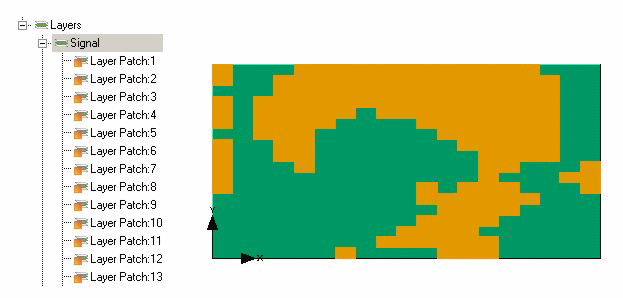

Monochrome images
of PCBs, detailing copper and insulators in black and white respectively,
can be used to quickly set-up representative layer patches. Using
one of the supplied direct EDA interfaces will enable import of
all board data, including image representation for each layer.
Procedure
- Right-click a Metallic layer
in the tree and choose Process Layer from
the popup menu.
If File
Name in the Layer property sheet has been set to the name of an
image file, the Layer Trace Processing dialog box is opened, otherwise
a file browser is opened to select the image before the dialog box
is opened.
- Use the dialog box to adjust
the representation.
Image colors can be optionally
inverted when the range is processed into layer patches.
- When finished, click Create Patches.
Results
Figure 1 shows an example of the
complexity of patches that can be created.
Figure 1. Processed Layer Patches
in Data Tree and on a Board
The Layer Type field in the Layer property sheet is not editable
when layer patches are defined in the layer.